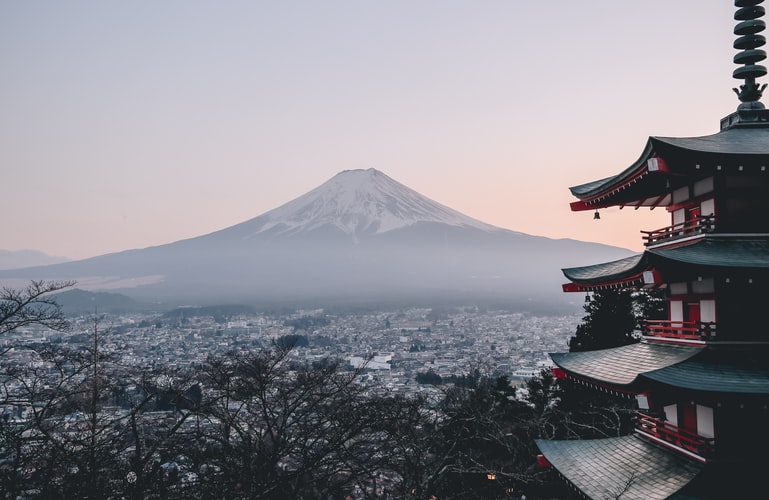
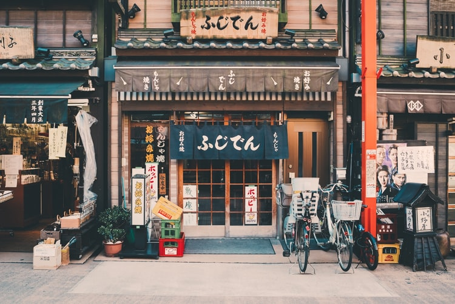
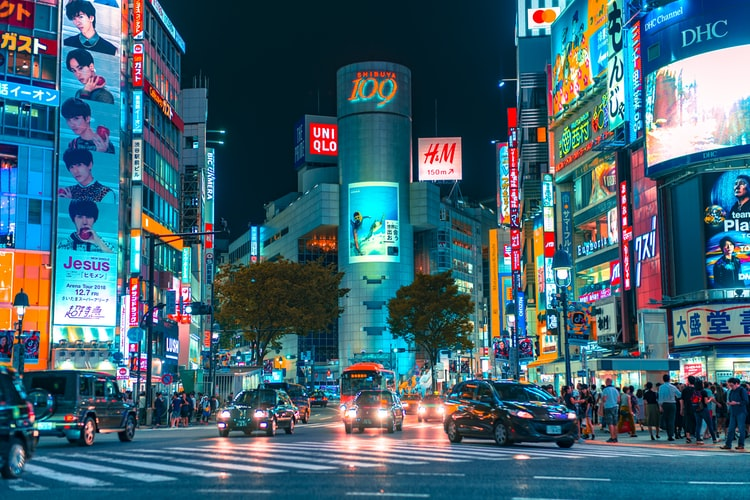
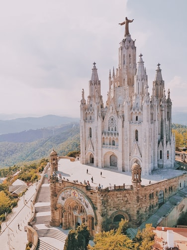
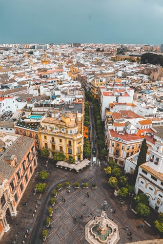
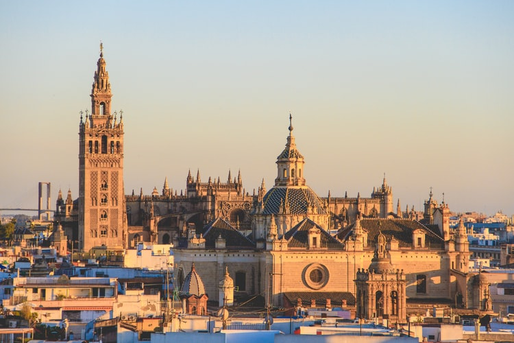
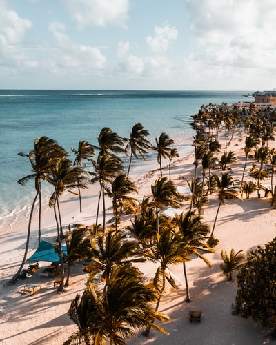
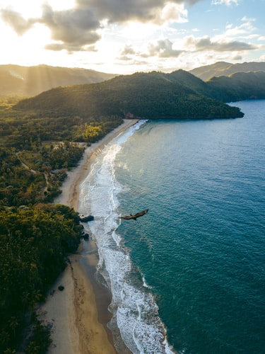
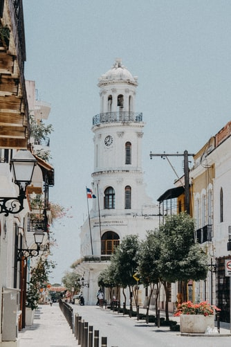

The world is a wonderful place, full of different kinds of countries, people, culture, food, and so on. Every single place in this planet is unique at it's own way and all those differences makes our planet even more beautiful. In this website, you'll just a super minimum representation of the different countries in the world. Hope you enjoy it
Japan
Japan is one of the most iconics countries in the world. The perfect combination between technology and nature is immaculate in this amazing country. Rich in culture, traditions, gastronomy and nature makes it the perfect destiny if you just want to be surprised. I can't wait to finally be in Japan.
  Spain
Spain is a really beautiful country with a lot of history on their streets. The architecture of Madrid, the coasts of Galicia and Islas Canarias, the Teide Peak on Tenerife are just a few examples that Spain has everything you can expect on a country and more. Undoubtedly, one of my main stops when I'll visit Europe.
  Dominican Republic
Dominican Republic, a country that can be called a paradise on earth. The food, the music, the nature, but most importantly the people, this is the perfect combination you are searching for in a country for a well deserved vacation, and I guarantee you that you’ll visit it more than once if you go.
  